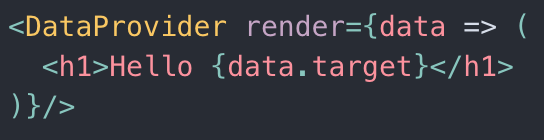

React Hooks: Hook Into the Power of Functions
Quinton Aiken, Cypress.io, @QuintonAiken
Agenda
- What are React Hooks?
- Common Hooks
- Thinking in Hooks
- Hooks Best Practices
- Exercises
What is the difference between a class component and a functional
component? (Common interview question)
-
class components use classes (this) and functional components are
just functions
-
class components have lifecycle methods (render,
componentDidMount, componentDidUpdate, etc)
- functional components are stateless
What are React Hooks?
-
functions that allow us to hook into React state and
lifecycle features from function components
-
allows us to ditch all uses of class components and this
-
they're easier to reason about since they're just functions
-
results in extremely simplified code composition and reuse. no
more HOCs or render props
Render Props

-
A component with a render prop takes a function that returns a
React element and calls it instead of implementing its own render
logic
-
Hard to distinguish between regular components and render-prop
components that are used for sharing logic